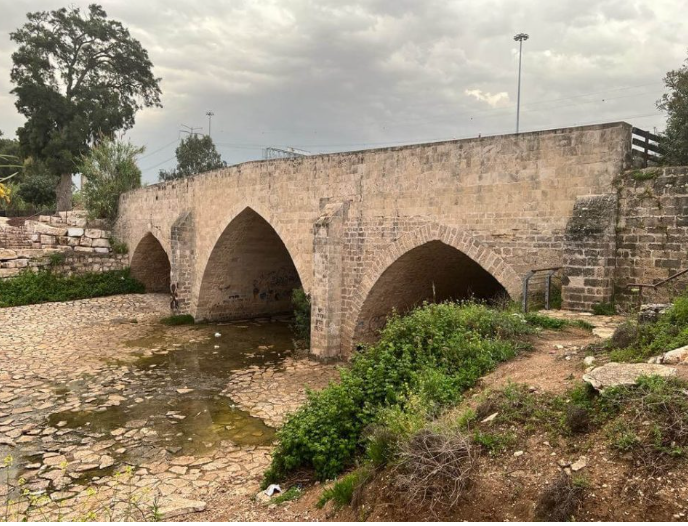

פארק עד הלום אשדוד – נחל לכיש
איזור בארץ:
טיולים באשדוד | טיולים בדרום

רקע
רקע
טיול לפארק עד הלום שבעיר אשדוד. שילוב של היסטוריה, טבע ובחורף הרבה מאוד מים שזורמים בנחל לכיש החוצה את הפארק. בנוסף על קירות הגשרים של הפארק יש מלא גרפיטי צבעוני וססגוני – סוג של אומנות מודרנית. בפארק עד הלום יש שולחנות פיקניק פזורים והדבר החשוב מכל נגישות במרבית המסלול (למעט מספר מדרגות).
המוטיב המרכזי בטיול בפארק הוא גשר בטון ענקי. הלא הוא "גשר עד הלום" המיתולוגי. שם זה נלקח מהביטוי ש"עד לכאן" הגיע הצבא המצרי. במהלך מלחמת יום העצמאות בתאריך 29/5/48. כאשר נבלם ע"י חטיבת גבעתי.
הגשר נבנה עוד בתקופה הרומית.
רקע פארק עד הלום
עם הכרזתה של מדינת ישראל היה חשש גדול של דוד בן גוריון מפלישה מסיבית של מדינות ערב : מצרים ,סוריה , לבנון ירדן ועירק מכל הכיוונים במטרה להגיע לליבה של המדינה תל אביב.ועל כן הוא נתן הנחייה, רגע לפני ההכרזה . להשמדת גשר זה שחיבר את אזור הדרום והמרכז . האיש שקיבל את המשימה החשובה הזו היה שמעון מורגולין שבעזרת זוג חמורים נשא על גבם כ 300 ק"ג חומרי נפץ .
בתאריך 12/5/48 , יומיים בלבד לפני ההכרזה על מדינת ישראל, הגשר פוצץ ע"י חיילי גבעתי אשר הציבות את הפצצות בירכתי הגשר.המצרים החלו לפלוש לתוך ישראל הצעירה. הם עברו בדרכם על פני מרבית היישובים בדרום : נירים , יד מרדכי , ניצנים.